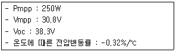
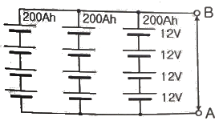
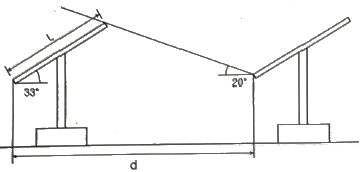
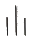
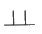
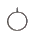
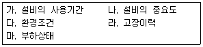

신재생에너지발전설비기사 (2020-06-06 기출문제)
1과목: 태양광발전 기획
1. 전기사업법에 따라 발전사업허가를 신청하는 경우로서 사업계획서만 제출하여도 되는 발전설비용량은 몇 kW 이하인가? (단, 구역전기사업의 허가 외의 허가를 신청하는 경우이다.)
- 200
- 300
- 500
- 1000
(정답률: 61%)

2. 전기공사업법에 따른 발전설비 공사의 종류가 아닌 것은?
- 화력발전소
- 비상용발전기
- 태양광발전소
- 태양열발전소
(정답률: 87%)
3. 신에너지 및 재생에너지 개발ㆍ이용ㆍ보급 촉진법에 따른 신ㆍ재생에너지 통계 전문기관은?
- 통계청
- 한국전력거래소
- 신ㆍ재생에너지센터
- 한국에너지기술연구원
(정답률: 87%)
4. 전기사업법에 따라 전력수급기본계획의 수립 시 기본계획에 포함되어야 할 사항으로 틀린 것은?
- 분산형전원의 개발에 관한 사항
- 분산형전원의 확대에 관한 사항
- 전력수급의 기본방향에 관한 사항
- 주요 송전ㆍ변전설비계획에 관한 사항
(정답률: 54%)
5. 태양광발전 전지를 재료에 따라 구분한 것으로 틀린 것은?
- 유기물
- 폴리머형
- 리튬이온형
- 염료감응형
(정답률: 61%)
6. 표준상태에서의 태양광발전 어레이 출력 20000 W, 월 적산 어레이 표면(경사면) 일사량 275kWh/m2ㆍ월, 표준상태에서의 일사강도 1kW/m2, 종합설계계수가 0.85일 때 월간 발전량(kWh/월)은?
- 4675
- 4.675
- 112200
- 140250
(정답률: 65%)
7. 전기공사업법에서 명시하고 있는 하자담보책임기간이 다른 공사는?
- 변전설비공사
- 태양광발전설비공사
- 배전설비공사 중 철탑공사
- 지중송전을 위한 케이블 공사
(정답률: 60%)
8. 단독운전 방지기능이 없는 10kW 태양광발전시스템이 380V, 60Hz의 계통전원에 연결되어 운전될 경우, 태양광발전시스템의 출력이 10kW, 부하가 유효전력 10kW, 지상무효전력이 +9.5kVar, 진상무효전력이 -10kVar 일 때 단독운전이 일어날 경우 예상되는 공진주파수는 약 몇 Hz 인가?
- 58.48
- 59.32
- 60.00
- 61.38
(정답률: 53%)
9. 신에너지 및 재생에너지 개발ㆍ이용ㆍ보급 촉진법에 따라 신에너지 및 재생에너지 기술개발 및 이용ㆍ보급에 관한 계획을 협의하려는 자는 그 시행 사업연도 개시 몇 개월 전까지 산업통상자원부장관에게 계획서를 제출하여야 하는가?(오류 신고가 접수된 문제입니다. 반드시 정답과 해설을 확인하시기 바랍니다.)
- 1
- 3
- 4
- 6
(정답률: 51%)
10. 표면온도 -15℃에서 태양광발전 모듈의 Vmpp와 Voc는 각각 약 몇 V인가?

- Vmpp : 14.74, Voc : 23.20
- Vmpp : 24.74, Voc : 33.20
- Vmpp : 34.74, Voc : 43.20
- Vmpp : 44.74, Voc : 53.20
(정답률: 69%)
11. 전기사업법에서 정의하는 “송전선로”란 어느 부분을 연결하는 전선로(통신용으로 전용하는 것은 제외한다.)와 이에 속하는 전기설비를 말하는가?
- 발전소와 변전소 간
- 전기수용설비 상호간
- 변전소와 전기수용설비 간
- 발전소와 전기수용설비 간
(정답률: 75%)
12. 신에너지 및 재생에너지 개발ㆍ이용ㆍ보급 촉진법에 따라 산업통상자원부장관이 수립하는 신ㆍ재생에너지의 기술개발 및 이용ㆍ보급을 촉진하기 위한 기본계획의 계획기간은 몇 년 이상인가?
- 1
- 3
- 5
- 10
(정답률: 68%)
13. 계통연계형 태양광발전용 인버터의 기능으로 틀린 것은?
- 직류지락 검출기능
- 자동전압 조정기능
- 최대전력 추종제어기능
- 교류를 직류로 변환하는 기능
(정답률: 74%)
14. 국토의 계획 및 이용에 관한 법률에 따라 개발행위허가의 경미한 변경으로 틀린 것은?
- 사업기간을 단축하는 경우
- 부지면적 또는 건축물 연면적을 10퍼센트 범위에서 축소하는 경우
- 관계 법령의 개정에 따라 허가받은 사항을 불가피하게 변경하는 경우
- 도시ㆍ군관리계획의 변경에 따라 허가받은 사항을 불가피하게 변경하는 경우
(정답률: 60%)
15. 역류방지 다이오드(Blocking Diode)의 역할에 대한 설명으로 옳은 것은?
- 과전류가 흐를 때 회로를 차단한다.
- 태양광발전 모듈의 최적 운전점을 추적한다.
- 태양광발전시스템의 외함을 접지하는데 사용한다.
- 태양광이 없을 때 축전지로부터 태양전지를 보호한다.
(정답률: 71%)
16. 다음 그림과 같이 축전지회로가 구성되어 있을 때, 단자 A, B사이에 나타나는 출력전압과 축전지 용량은?

- DC 12V, 200Ah
- DC 12V, 600Ah
- DC 48V, 200Ah
- DC 48V, 600Ah
(정답률: 78%)
17. 부지선정 시 일반적으로 고려되어야 하는 사항으로 틀린 것은?
- 풍향 조건
- 지리적인 조건
- 행정상의 조건
- 건설 환경적 조건
(정답률: 69%)
18. 신ㆍ재생에너지 설비의 지원 등에 관한 규정에 따라 위반행위별 사업참여 제한기준 중 사업내용 위반에 해당하지 않는 것은?
- 허위 또는 부정한 방법으로 신청서를 제출한 경우
- 허위 또는 부정한 방법으로 설치확인을 받은 경우
- 허위 또는 부정한 방법으로 보조금을 수령한 경우
- 센터의 장의 시정요구에 정당한 사유없이 응하지 않는 경우
(정답률: 54%)
19. 일조시간과 가조시간에 대한 설명으로 틀린 것은?
- 일조시간과 가조시간의 비를 일조율(%)이라 한다.
- 일조시간은 실제로 태양광선이 지표면을 내리 쬔 시간이다.
- 구름이 많은 날씨일 경우 가조시간과 일조시간이 일치한다.
- 가조시간이랑 한 지방의 해 돋는 시간부터 해지는 시간까지의 시간을 말한다.
(정답률: 82%)
20. 국토의 계획 및 이용에 관한 법률에 따른 농림지역에서의 개발행위허가의 규모로 옳은 것은?
- 5천제곱미터 미만
- 1만제곱미터 미만
- 3만제곱미터 미만
- 5만제곱미터 미만
(정답률: 64%)
2과목: 태양광발전 설계
21. 내선규정에 따라 케이블 콘크리트에 직접 매설하는 경우 케이블은 철근 등을 따라 포설하는 것을 원칙으로 하고 바인드선 등으로 철근 등에 몇 m 이하의 간격으로 고정하여야 하는가?
- 1
- 2
- 3
- 4
(정답률: 58%)
22. 태양광발전 어레이 세로길이(L)가 3m, 태양광발전 어레이의 경사각을 33°, 동지 시 발전한계시각에서의 태양 고도각을 20°로 산정하여 북위 37° 지방에서 양광발전소를 건설할 때 어레이 간 최소 이격거리 d는 약 몇 m인가?

- 4
- 5
- 6
- 7
(정답률: 57%)
23. 전기설비기술기준의 판단기준에 따라 일반주택 및 아파트 각 호실의 현관등은 몇 분 이내에 소등되도록 타임스위치를 시설하여야 하는가?
- 1
- 2
- 3
- 5
(정답률: 64%)
24. 건축구조기준 설계하중(KDS 41 10 15 : 2019)에 따른 적설하중에 대한 설명으로 틀린 것은?
- 최소 지상적설하중은 0.5kN/m2로 한다.
- 우리나라의 기본지상적설하중 중 가장 높은 지방은 6.0kN/m2이다.
- 지붕의 경사도가 15°이하 혹은 70°를 초과하는 경우에는 불균형적설하중을 고려하지 않아도 된다.
- 지상적설하중이 0.5kN/m2보다 작은 지역에서는 퇴적량에 의한 추가하중을 고려하지 않아도 무방하다.
(정답률: 57%)
25. 태양광발전 어레이 설치 지역의 설계속도압이 1000N/m2, 태양광발전 어레이의 유효수압면적이 7m2일 경우 풍하중은 얼마인가? (단, 가스트 영향계수는 1.8, 풍력계수는 1.3을 적용하며, 기타 주어지지 않은 조건은 무시한다.)
- 9.75kN
- 13.50kN
- 16.38kN
- 17.55kN
(정답률: 59%)
26. 설계감리업무 수행지침에 따른 설계감리원의 기본임무에 해당하지 않는 것은?
- 설계용역 계약 및 설계감리용역 계약내용이 충실히 이행될 수 있도록 하여야 한다.
- 과업지시서에 따라 업무를 성실히 수행하고 설계의 품질향상에 노력하여야 한다.
- 설계감리용역을 시행함에 있어 설계기간과 준공처리 등을 감안하여 충분한 기간을 부여하여 최적의 설계품질이 확보되도록 노력하여야 한다.
- 설계공정의 진척에 따라 설계자로부터 필요한 자료 등을 제출받아 설계용역이 원활히 추진될 수 있도록 설계감리 업무를 수행하여야 한다.
(정답률: 56%)
27. 건축일반용어(KS F 1526:2010)의 제도 및 설계에 따라 건축물 또는 물체의 세부를 상세하게 나타내어 그린 도면은?
- 상세도
- 투상도
- 배치도
- 배면도
(정답률: 79%)
28. 전력기술관리법에 따라 해당되는 전력시설물의 설계도서는 설계감리를 받아야 한다. 법에 따른 전력시설물 중 설계감리 대상에 해당하지 않는 것은?
- 용량 80만킬로와트 이상의 발전설비
- 전압 20만볼트 이상의 송전ㆍ변전설비
- 전압 10만볼트 이상의 수전설비ㆍ구내배전설비ㆍ전력사용설비
- 전기철도의 수전설비ㆍ철도신호설비ㆍ구내배전설비ㆍ전차선설비ㆍ전력사용설비
(정답률: 49%)
29. 전력시설물 공사감리업무 수행지침에 따라 감리원이 해당 공사 착공 전에 실시하는 설계도서 검토내용에 포함되지 않는 것은?
- 현장조건에 부합 및 시공의 실제가능 여부
- 설계도서의 누락, 오류 등 불명확한 부분의 존재여부
- 시공사가 제출한 물량내역서와 발주사가 제공한 산출내역서의 수량일치 여부
- 설계도면, 설계설명서, 기술계산서, 산출내역서 등의 내용에 대한 상호일치여부
(정답률: 66%)
30. 분산형전원 배전계통연계 기술기준에 따라 전기방식이 교류 단상 220V인 분산형전원을 저압 한전계통에 연계할 수 있는 용량은?
- 100kW 미만
- 150kW 미만
- 250kW 미만
- 500kW 미만
(정답률: 56%)
31. 모듈에서 접속함까지의 직류배선이 30m이며, 모듈 전압이 300 V, 전류가 5A일 때, 전압강하는 몇 V 인가? (단, 전선의 단면적은 4.0mm2이다.)
- 1.335
- 1.425
- 1.787
- 1.925
(정답률: 51%)
32. 설계하중을 시간의 변동에 따라 구분한 것으로 틀린 것은?
- 활하중
- 영구하중
- 임시하중
- 우발하중
(정답률: 56%)
33. 전력시설물 공사감리업무 수행지침에 따라 책임감리원은 분기보고서를 작성하여 발주자에게 제출하여야 한다. 보고서는 매분기말 다음 달 며칠 이내로 제출하여야 하는가?
- 5
- 7
- 15
- 30
(정답률: 60%)
34. 전력기술관리법에 따라 시ㆍ도지사는 감리업자가 공사감리를 성실하게 하지 아니하여 일반인에게 위해(危害)를 끼친 경우 산업통상자원부령으로 정하는 바에 따라 그 등록을 몇 개월 이내의 기간을 정하여 그 영업의 전부 또는 일부의 정지를 명할 수 있는가?
- 1
- 3
- 6
- 9
(정답률: 62%)
35. 케이블 화재에 대한 설명으로 틀리 것은?
- 연소가 빠르다.
- 연소에너지가 낮고 열기가 강하다.
- 부식성 가스 및 유독성 가스가 발생한다.
- 연기발생으로 피난, 소화활동에 지장을 준다.
(정답률: 75%)
36. 토목 도면에서 밭을 나타내는 기호는?



(정답률: 74%)
37. 신재생발전기 계통연계기준에 따라 신재생발전기의 역률은 몇 이상으로 유지하여 운전하여야 하는가?
- 85
- 90
- 95
- 100
(정답률: 59%)
38. 전기설비기술기준의 판단기준에 따라 분산형전원을 전력계통에 연계하는 경우 인버터로부터 직류가 계통으로 유출되는 것을 방지하기 위하여 접속점과 인버터 사이에 설치하는 것은? (단, 단권변압기는 제외한다.)
- 차단기
- 전력퓨즈
- 보호계전기
- 상용주파수 변압기
(정답률: 62%)
39. 전기설비기술기준의 판단기준에 따라 22.9kV 가공전선과 그 지지물ㆍ완금류ㆍ지주 사이의 이격거리는 몇 cm 이상으로 하여야 하는가?
- 15
- 20
- 25
- 30
(정답률: 56%)
40. 태양광발전설비의 공사에 적용하는 시방서에 관련된 내용 중 틀린 것은?
- 공사시방서는 설계도면에서 표현이 곤란한 설계내용 및 세부 공사방법 등을 기술한다.
- 표준시방서는 시설물의 안전 및 공사시행의 적정성과 품질확보 등을 위하여 시설물별로 정한 표준적인 시공기준을 말한다.
- 시방서란 어떤 프로젝트의 품질에 관한 요구사항들을 규정하는 공사계약문서의 일부분으로서 공사의 품질과 직접적으로 관련된 문서이다.
- 전문시방서는 공사시방서를 기본으로 모든 공종을 대상으로 하여 특정한 공사의 시공등에 활용하기 위한 종합적인 시공기준을 말한다.
(정답률: 57%)
3과목: 태양광발전 시공
41. 송전전력, 부하역률, 송전거리, 전력소실 및 선간전압이 같을 경우 3상 3선식에서 전선 한 가닥에 흐르는 전류는 단상 2선식의 경우의 약 몇 %가 되는가?
- 57.7
- 70.7
- 141
- 115
(정답률: 58%)
42. 건물에 설치된 태양광발전시스템의 낙뢰 및 과전압 보호로 고려되어야 하는 방법이 아닌 것은?
- 교류측에 과전압 보호장치를 설치해야 한다.
- 태양광발전시스템 접속함의 직류측에 서지 보호장치를 설치해야 한다.
- 태양광발전시스템이 외부에 노출되어 있다면 적절한 피뢰침을 설치해야 한다.
- 낙뢰 보호시스템이 있어도 반드시 태양광발전시스템을 접지 및 등전위면에 연결해야 한다.
(정답률: 64%)
43. 토사기초 터파기에 대한 설명으로 틀린 것은?
- 토사기초 터파기 부위의 지지력 및 침하량은 설계도서에 명시된 허용지지력 및 허용 침하량 기준을 만족하여야 한다.
- 토사기초 지반에서는 터파기 후 지하수와 주변 유입수를 차단하거나 타 부위로 유도 배수하여 지반의 이완, 변형 및 연약화가 진행되지 않도록 조치하여야 한다.
- 기초 터파기 바닥면이 동결할 경우에는 설계감리원과 협의하여 동결토는 제거하고, 양질의 재료로 치환하는 등 자연지반과 동등 이상의 지내력을 갖도록 조치한다.
- 토사기초 지반의 토질이 설계도서와 상이하거나 연약한 지반이 분포할 가능성이 있는 지역에서는 시추조사 등의 방법으로 지층분포상태와 허용지지력 및 기초형식의 적합성을 확인하여 공사감독자의 승인을 받아야 한다.
(정답률: 62%)
44. 가정에 공급하는 교류 전압이 220V일 때, 이 220V는 무슨 값을 의미하는가?
- 실효값
- 최대값
- 순시값
- 평균값
(정답률: 75%)
45. 태양광발전시스템을 계통에 연계하는 경우 자동적으로 태양광발전시스템을 전력계통으로부터 분리하기 위한 장치를 시설하지 않아도 되는 경우는?
- 태양광발전시스템의 단독운전 상태
- 연계한 전력계통의 이상 또는 고장
- 태양광발전시스템의 이상 또는 고장
- 태양광발전용 모니터링설비의 단독운전 상태
(정답률: 64%)
46. 도선의 길이가 3배로 늘어나고 반지름이 1/3로 줄어들 경우 그 도선의 저항은 어떻게 변하겠는가? (단, 고유저항에는 변화가 없다.)
- 9배 증가
- 1/9로 감소
- 27배 증가
- 1/27로 감소
(정답률: 70%)
47. 태양광발전 어레이용 가대의 재질 및 형태에 따른 검토사항으로 틀린 것은? (단, 가대의 재질은 강재+용융아연도금으로 한다.)
- 20년 이상의 내구성을 가져야 한다.
- 절삭 등의 가공이 쉽고 무거워야 한다.
- 불필요한 가공을 피할 수 있도록 규격화 되어야 한다.
- 염해, 공해 등을 고려하여 녹이 발생하지 않아야 한다.
(정답률: 78%)
48. 변압기에서 1차 전압이 120V, 2차 전압이 12V일 때 1차 권선수가 400회라면 2차 권선수는 몇 회인가?
- 10
- 40
- 400
- 4000
(정답률: 72%)
49. 계약상의 큰 변경이나 불가항력 등에 의한 공정지연이 발생하지 않는 한 사업종료 때까지 수정되지 않는 공정표는?
- 관리기준공정표
- 사업기본공정표
- 건설종합공정표
- 분야별종합공정표
(정답률: 65%)
50. 단상 브리지 정류회로에서 출력전압의 피크값이 20V라면 그 평균값은 약 몇 V인가?
- 3.18
- 6.37
- 9.0
- 12.73
(정답률: 54%)
51. 보호계전장치의 구성 요소 중 검출부에 해당되지 않는 것은?
- 릴레이
- 영상변류기
- 계기용변류기
- 계기용변압기
(정답률: 74%)
52. 다른 개폐기기와 비교하여 전력퓨즈의 특징으로 틀린 것은?
- 고속도 차단된다.
- 릴레이가 필요하다.
- 소형으로 차단 능력이 크며, 재투입은 불가능하다.
- 동작시간-전류특성을 계전기처럼 자유롭게 조절할 수 없다.
(정답률: 70%)
53. 애자의 구비조건으로 틀린 것은?
- 누설전류가 적을 것
- 기계적 강도가 클 것
- 충분한 절연내력을 가질 것
- 온도의 급변에 잘 견디고 습기를 잘 흡수할 것
(정답률: 72%)
54. 저압전기설비-제5-52부 : 전기기기의 선정 및 설치-배선설치(KS C IEC 60364-5-52 : 2012)에 따라 도체 및 케이블과 관련한 설치방법에 대한 설명으로 틀린 것은?
- 나도체의 애자사용 시공
- 절연전선의 케이블트레이 시공
- 절연전선의 케이블덕팅 시스템 시공
- 외장케이블(외장 및 무기질 절연물을 포함)의 직접고정 시공
(정답률: 42%)
55. 전력용 케이블의 지중 매설 시공 방법(KS C 3140:2014)에 따라 관로 인입식 전선로 시공시 사용되는 강관의 접속방법으로 틀린 것은?
- 나사 박기
- 볼 조인트
- 접착 접합
- 패킹 개재 꽂음(고무링 접합)
(정답률: 65%)
56. 금속제 케이블트레이의 종류 중 길이 방향의 양 옆면 레일을 각각의 가로 방향 부재로 연결한 조립 금속구조인 것은?
- 사다리형
- 통풍 채널형
- 바닥 밀폐형
- 바닥 통풍형
(정답률: 73%)
57. 밴드갭 에너지는 반도체의 특성을 구분하는 매우 중요한 요소다. Si, GaAs, Ge를 밴드갭 에너지의 크기순으로 옳게 나열한 것은?
- Si＞GaAs＞Ge
- GaAs＞Ge＞Si
- GaAs＞Si＞Ge
- Ge＞GaAs＞Si
(정답률: 65%)
58. 태양광발전 어레이의 절연저항 측정에 대한 내용으로 옳은 것은?
- 절연저항 측정 시 온도는 고려하지 않는다.
- 일사시간 동안에는 단락용 개폐기를 이용한다.
- 발전량이 적어 위험성이 낮은 비오는 날 측정하는 것이 좋다.
- 사용전압 400V 이상일 때 절연저항 측정기준은 0.1MΩ 이상이다.
(정답률: 51%)
59. 앵커(KCS 11 60 00:2016)에 따라 앵커의 삽입작업에 대한 설명으로 틀린 것은?
- 앵커는 삽입 작업대 또는 크레인 등의 장비에 의해서 삽입하여야 한다.
- 소요길이까지 삽입 후 지지대를 설치하여 앵커를 공내에 고정시킨다.
- 공에서 누수가 있을 경우에는 공입구를 부직포로 막아 토사유출을 방지하여야 한다.
- 앵커 삽입 시 앵커가 천공 구멍의 중앙에 위치하도록 앵커에 중심결정구를 5m 간격으로 부착한다.
(정답률: 61%)
60. 전력계통 검토 시 단락전류의 계산목적으로 틀린 것은?
- 보호계전기 셋팅
- 변압기 용량 결정
- 통신유도장해 검토
- 차단기 차단용량 결정
(정답률: 45%)
4과목: 태양광발전 운영
61. 전원의 재투입 시 안전조치로 틀린 것은?
- 유자격자가 시험 및 육안 검사를 실시한다.
- 차단장치나 단로기 등에 잠금장치 및 꼬리표를 부착한다.
- 전기기기 등에서 모든 작업자가 완전히 철수했는지를 직접 확인한다.
- 유자격자는 필요한 경우, 회로 및 설비를 안전하게 가압할 수 있도록 모든 기구, 점퍼선, 단락선, 접지선 및 기타 철거하여야 할 모든 장치들이 제대로 철거되었는지를 확인하여야 한다.
(정답률: 65%)
62. 태양광발전용 모니터링 프로그램의 기능이 아닌 것은?
- 테이터 수집 기능
- 데이터 분석 기능
- 데이터 예측 기능
- 데이터 통계 기능
(정답률: 75%)
63. 전기안전관리자의 직무 고시에 따라 태양광발전소 안전관리자가 갖추어야 할 안전장비와 그 장비의 권장 교정 및 시험주기로 옳은 것은?
- 절연장화 1년
- 고압검전기 2년
- 절연안전모 2년
- 고압절연장갑 3년
(정답률: 66%)
64. 도체의 저항, 두 점 사이의 전압 및 전류의 세기를 측정하는 검사장비는?
- 검전기
- 멀티미터
- 접지저항계
- 오실로스코프
(정답률: 73%)
65. 자가용전기설비 중 태양광발전시스템의 정기검사 시 태양광 전지의 검사세부 종목이 아닌 것은?
- 절연저항
- 외관검사
- 규격확인
- 절연내력
(정답률: 42%)
66. 전기설비에 있어서 감전예방의 종류 중 직접접촉에 대한 감전예방 사항이 아닌 것은?
- 장애물에 의한 보호
- 단독시행에 의한 보호
- 충전부 절연에 의한 보호
- 격벽 또는 외함에 의한 보호
(정답률: 58%)
67. 산업안전보건기준에 관한 규칙에 따라 근로자가 충전전로를 취급하거나 그 인근에서 작업하는 경우 그 충전전로의 선간전압이 22.9kV라면 충전전로에 대한 접근 한계거리는 몇 cm 인가?
- 60
- 90
- 110
- 130
(정답률: 54%)
68. 태양광발전 접속함(KS C 8567:2019)에 따라 소형(3회로 이하) 접속함의 경우 실외에 설치시 보호등급(IP)으로 옳은 것은?
- IP25 이상
- IP50 이상
- IP54 이상
- IP55 이상
(정답률: 73%)
69. 전력시설물 공사감리업무 수행지침에 따른 태양광발전시스템 시공 후 감리원의 준공도면 등의 검토ㆍ확인 사항이 아닌 것은?
- 공사업자로부터 가능한 한 준공예정일 2개월 전까지 준공 설계도서를 제출받아 검토ㆍ확인하여야 한다.
- 준공 설계도서 등을 검토ㆍ확인하고 완공된 목적물이 발주자에게 차질없이 인계될 수 있도록 지도ㆍ감독하여야 한다.
- 준공도면은 공사시방서에 정한 방법으로 작성되어야 하며, 모든 준공도면에는 발주자의 확인ㆍ서명이 있어야 한다.
- 공사업자가 작성ㆍ제출한 준공도면이 실제 시공된 대로 작성되었는지 여부를 검토ㆍ확인 하여 발주자에게 제출하여야 한다.
(정답률: 56%)
70. 태양광발전시스템의 일상점검 시 태양광발전 어레이의 육안점검 항목이 아닌 것은?
- 접지저항
- 지지대의 부식 및 녹
- 표면의 오염 및 파손
- 외부배선(접속케이블)의 손상
(정답률: 76%)
71. 태양광발전시스템 운영에 있어서 월별 운영계획이 아닌 것은?
- 인버터 및 주요 동력기기의 상태 점검
- 일별 운영계획의 분석 및 중요사항 점검
- 월간 발전량 분석을 통한 효율성 감소방안 강구
- 모듈, 인버터, 지지대 등의 정기점검 실시 및 계획 수립
(정답률: 55%)
72. 배전반 외부에서 이상한 소리, 냄새, 손상 등을 점검항목에 따라 점검하며, 이상 상태 발견 시 배전반 문을 열고 이상 정도를 확인하는 점검은?
- 일상점검
- 특별점검
- 정기점검
- 사용전점검
(정답률: 73%)
73. 태양광발전용 변압기의 정기점검 시 점검대상에 해당하지 않는 것은?
- 온도계
- 냉각팬
- 유면계
- 조작장치
(정답률: 46%)
74. 인버터에 ‘Solar Cell UV Fault'로 표시되었을 경우의 현상 설명으로 옳은 것은?
- 태양전지 전압이 규정치 이하일 때
- 태양전지 전력이 규정치 이하일 때
- 태양전지 전류가 규정치 이하일 때
- 태양전지 주파수가 규정치 이하일 때
(정답률: 73%)
75. 태양광 발전소에 선임된 전기안전관리자의 직무 범위로 틀린 것은?
- 전기설비의 운전, 조작 또는 이에 대한 업무의 감독
- 전기재해의 발생을 예방하거나 그 피해를 줄이기 위하여 필요한 응급조치
- 전기설비의 공사ㆍ유지 및 운용에 관한 업무 및 이에 종사하는 사람에 대한 안전교육
- 전기수용설비의 증설 또는 변경공사로서 총공사비가 1억 이상인 공사의 감리 업무
(정답률: 68%)
76. 고장원인을 예방하기 위해 사전에 점검계획 수립 시 고려사항을 모두 고른 것은?

- 가, 라, 마
- 가, 나, 라, 마
- 나, 다, 라, 마
- 가, 나, 다, 라, 마
(정답률: 71%)
77. 중대형 태양광 발전용 인버터(계통연계형, 독립형)(KS C 8565:2016)에 따라 누설전류 시험 시 누설전류는 몇 mA 이하이어야 하는가?
- 5
- 10
- 15
- 20
(정답률: 56%)
78. 신재생에너지 공급인증서를 뜻하는 용어는?
- SMP
- REC
- RPS
- REP
(정답률: 70%)
79. 태양광발전시스템 운전 특성의 측정 방법(KS C 8535:20⑤)에서 축전지의 측정항목으로 틀린 것은?
- 단자전압
- 충전전류
- 충전전력량
- 역조류전류
(정답률: 66%)
80. 결정질 실리콘 태양광발전 모듈(성능)(KS C 8561:2020)에 따른 시험 장치에 해당하지 않는 것은?
- 항온항습 장치
- 단자강도 시험 장치
- 용량 보존 시험 장치
- 기계적 하중 시험 장치
(정답률: 44%)